雨水节气的“雨”字，严格地说应该读作四声（yù），做动词，意思是下（雨、雪等）。《诗经》里面有一首非常著名的诗叫作《采薇》，这首诗最脍炙人口的诗句为：“昔我往矣，杨柳依依。今我来思，雨雪霏霏。”“雨（yù）雪霏霏”里的“雨”，在这里是动词，是天上下雨、下雪的意思。
也就是说，从雨水节气开始，天上下的不再是雪而是水了。
雨水节气的水是非常宝贵的，因为它是春天生发的催化剂。这个水不仅是天上的水，还包括地面的水。
我曾经写过一首《四季五味养生歌》：“春吃甘，脾平安；夏吃辛，清肺金；秋吃酸，护肝胆；冬吃苦，把肾补；少吃咸，能延年。”讲的是一年四季每个季节应该吃什么味道的食物来养五脏。
“春吃甘”，就是说春天要吃甘味的食物。甘味的食物有很多种，鱼肉是其中一种。在春天吃一些鱼肉，有养护脾胃的作用，对小孩来说还有促进大脑发育和保护视力的作用。
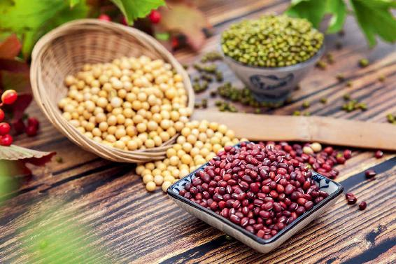
雨水节气第一候的物候特点是“獭祭鱼”，獭就是水獭。水獭开始捕鱼了，捕完鱼以后，它会把捕到的鱼排列起来，古人认为它是在祭祀，所以叫獭祭鱼。
其实，这时的渔民也开始捕鱼了，北方地区有一种说法是要吃开河鱼。河水刚解冻时的鱼是特别鲜美的。因为一个冬天在冰层下生活，鱼体内的脏污都已经排尽了，而且鱼身体里的脂肪也已经转化了，所以味道比较好。
其实，鱼儿冬天生活在冰层下面，身体也像我们人的身体一样经历了一个收藏的阶段，而且鱼是自然生物，顺应天时是生物的本能，所以它们比人收藏得更好。整个冬天，鱼在冰面下的活动很少，吃的东西也非常少，这是真正的收藏。
经过收藏阶段的开河鱼，体内的精气很充足，所以吃开河鱼，对我们的身体有比较好的补益作用。因此，民间传说：“开河鱼赛人参”，就是这么一个道理。
人也是一样的，如果您在冬天收藏得比较好，春天就会感觉精力充沛；如果您在冬天没有好好地收藏，春天的时候就会感觉到萎靡不振，甚至会生病。
冬天身体养得好不好，春天就可以看出来了。您是想像开河鱼一样活蹦乱跳，还是像人工养殖的鱼那样无精打采呢？
春天吃鱼要注意一点，就是要放胡椒粉，特别是做鱼汤，更要放一点点胡椒粉。因为胡椒粉是暖肾的，有引火归原的作用。
老话讲：“鱼生火，肉生痰。”其实，鱼是不会让人上火的，有些人吃了鱼以后不消化，虚火上浮了，您用一点点胡椒粉引火归原，就不会上火了。
有一种食材跟鱼是绝配，那就是泡菜。用泡菜做鱼是西南地区，特别是四川的一种做法，它可以很好地去腥、解腻、提鲜，做出来的鱼特别好吃。
我的微信里有一位读者，我觉得他挺善于思考的，他留言说：“陈老师，您说春天不宜多吃酸，那可不可以吃泡菜呢？”
其实，春天不宜吃酸是从传统医学上来讲的。泡菜的酸味其实是乳酸菌带来的一种风味，是可以吃的，因为泡菜并不属于酸涩的食物。泡菜是酸而辛，甘而咸，是带有四种味道的食物，其中比较突出的味道，不是酸而是辛。
一般来说，泡菜是比较辣的，就算不放辣椒和生姜，它用的材料也都是辛香味的，比如，十字花科的芥菜、大头菜、萝卜。所以，在春天的时候，您是完全可以吃泡菜的。
我把雨水节气比作是春天里的冬天，因为这个节气经常会有春寒。古人写诗经常会用到“春寒”这个词，说明他们对春天的寒气是深有体会的。文学大家钱锺书先生也写过有关春寒的诗句：“迷离睡醒犹余梦，料峭春回未减寒。”
春天来了，但是寒气没有减少，这是为什么呢？
北方的朋友应该更加清楚，雨水节气的时候，冰雪在消融，江河在解冻，气温应该回暖了，但北方人有句老话，叫作“下雪不冷化雪冷”。因为雪化的时候，会吸收大量的热量，再加上北方经常会有冷空气光顾，还会带来寒潮南下，这就是人们形容的春寒。辛弃疾面对春寒写道：“元宵过也，春寒犹自如此。”还得“就火添衣”。
俗话说：“春冻骨头冬冻肉”，春天的冷跟冬天的冷不一样，冬天只要身上捂得厚就行了。但在春天，出门以后总感觉有一股寒气顺着腿往上蹿，它是冻骨头的，这是地气的寒。
这个时候虽然天气在升温，但地气还是比较寒凉的，所以下半身要多穿点，不要着急减，以免冻了骨头。
在早春的时候，要防止“冻骨头”，有一样菜就能帮到我们，它能给下焦的肾系统增加阳气，这就是春韭菜。
雨水节气是一年中吃韭菜的最佳时令，再往后的仲春（农历二月），也还可以吃，清明节以后再吃韭菜就要很慎重了。
因为春韭特别补，但夏韭就不值钱了。老话说：“夏韭臭死狗”，意思是到了夏天，韭菜不仅纤维粗、口感老，还容易腐烂发臭，味道很不好。其实，夏韭不仅味道差，而且热性强，吃的话热毒太重，一般会吃菜的人在夏天是不吃韭菜的。
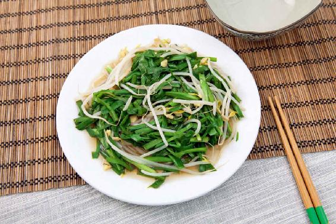
1.初春多吃韭菜，人不生百病，还筋骨强健
古人说韭菜：“春三月食之，苛疾不昌，筋骨益强。”认为春天多吃韭菜，就会使人百病不生，还会筋骨强健。古人还认为，在春天吃韭菜可以祛除面部的皱纹，使人心情开朗，视力变好，目光炯炯有神，所以，古人也把韭菜称为百菜之王。
“韭”字的谐音就是长久的“久”。古人发现韭菜是可以生长很多年的。据说，它可以长90年。我没有见过生长了90年的韭菜，但韭菜能长的年份比较多，这是肯定的，因为它是一种宿根植物。我在花园里种了韭菜，年年春天，它们都会发出新苗。
在北方，韭菜在土里埋一个冬天，一到春天它顶着残雪依然能够长出苗来，因此韭菜的生命力是非常顽强的，特别是初春头一茬的韭菜。
为什么春韭好，因为它是头一茬的韭菜，是越过冬的。它得到了冬天地气充分的滋养，拥有了很好的收藏。
得到地气充分滋养的韭菜根，在初春的时候发出苗来，又受到春日阳光的滋养，这样的韭菜特别有补益作用，而且食用它还不容易上火，因为春韭的热性不重，它还是一种温性的食物。
2.吃春韭，配一点绿豆芽就好
早春的韭菜是非常鲜嫩的，也非常好吃，我们除了吃春盘的时候可以用到它，还可以直接用它来做凉菜。不需要过多的配料，做法也很简单，这样才能凸显它的清香味道。
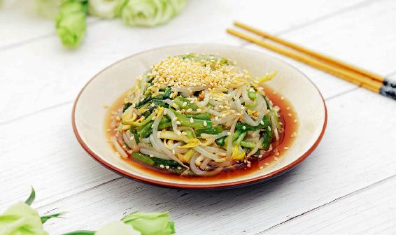
建议不要用初春的韭菜来炒肉、炒鸡蛋什么的，只需简单地配一些绿豆芽就可以。此外，在韭菜里加少许的绿豆芽，还可以防止上火。
我们就取这两样来做一道很适合雨水节气吃的时令菜，这道菜少油少盐，老人也可以吃点。
我们还可以给这道菜做一个造型。把拌好的韭菜、豆芽放在小碗里压实，把碗倒扣在盘子上，它就会形成一个很漂亮的半圆形。再撒一点芝麻碎，既添香，也是一种装饰，这道凉拌青韭芽就做好了。
凉拌青韭芽
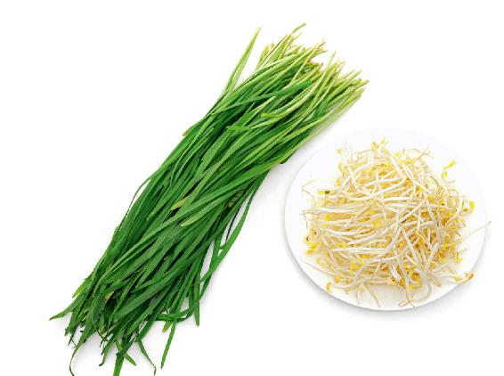
原料：嫩的韭菜、绿豆芽和一点点白芝麻。
调料：生姜、芝麻油、盐、糖、醋。
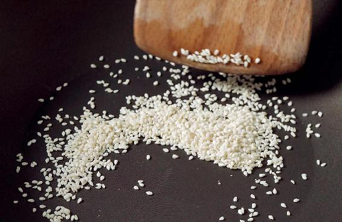
做法：
1.把芝麻放在炒锅里，不放油，开小火，炒出来一点香味就可以了。注意火别大了，否则芝麻会炒焦。
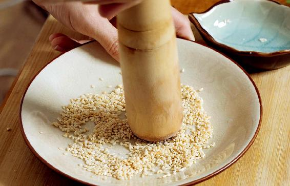
2. 把炒好的芝麻放在干的案板上，用擀面杖擀碎。
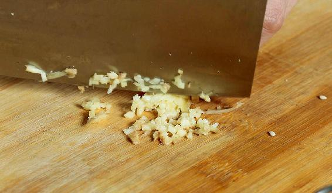
3. 生姜切成碎末，记住姜一定是带皮的。把姜、芝麻碎放在一起，备用。
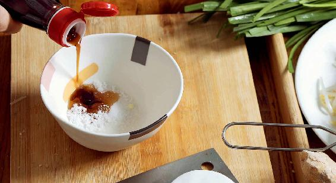
4. 取少许的盐、糖、醋和芝麻油拌成调味汁，备用。
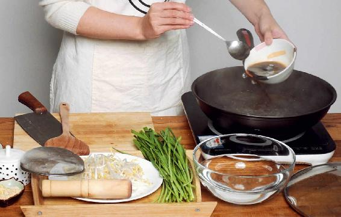
5. 锅里加水烧开，把调好的调味汁倒1/3进去，这样焯韭菜可以保护其营养不流失。记住，要用早春的嫩韭菜，不用切开。韭菜要快速焯烫，因为这是嫩韭菜，稍微焯一下就可以了。
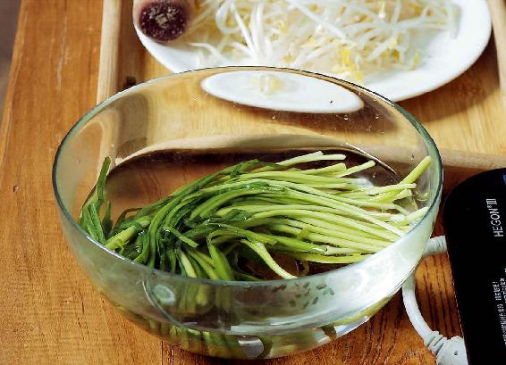
6. 焯过的韭菜过一下凉水，使其保持青绿的颜色，然后把韭菜切成一寸长的段。
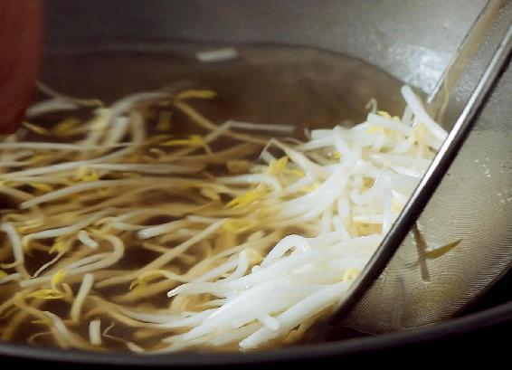
7. 豆芽也用焯韭菜的水焯一下，焯一分钟左右，捞出来也过一下凉水。
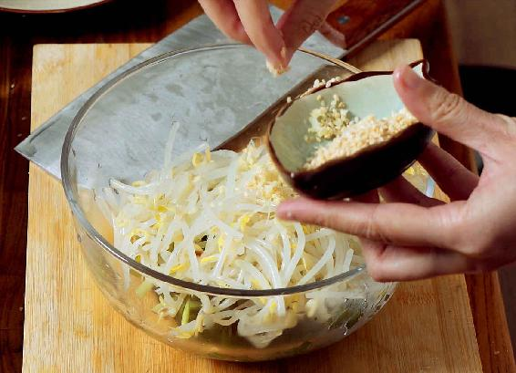
8. 把焯过的豆芽和韭菜放在碗里拌匀，再倒入调味汁，撒上切好的姜末，然后拌匀。
吃凉拌青韭芽可以通气血。我曾经说过，在早春的时候养生，讲究的就是一个“气”字，要让气血通和。这道凉菜就可以通气血，还可以消除疲劳，对缓解春困也有帮助。它还有一个特别的好处，就是可以清肠排毒，把肠胃内的浊气给排出去。
这道菜也很适合老年人吃，因为它用的油和盐都非常少，而且还是芝麻油，给老年人通肠胃也是很有好处的。
一年之中，吃韭菜最补的时令就是在初春，这时吃韭菜既能补肾阳又能通气血。第一场春雨过后，韭菜长得非常水灵，又香又嫩。
头茬的新韭您可别忘了吃，它有春雨的味道。
读者评论：凉拌青韭芽，味道很棒
一丹_k7：凉拌青韭芽，味道很棒！平时不爱吃韭菜，这次和绿豆芽拌在一起，感觉很好吃。
淡然静雅：凉拌青韭芽已吃，真的很清口。我用老师教的方法，自己发的绿豆芽，真没想到会这么方便。
文静：吃了陈老师推荐的凉拌青韭芽，困扰已久的便秘好了，真是意外之喜呀！
允斌解惑：吃凉拌青韭，辅以蒲公英根茶，对男性特别好
含笑罂粟：老师，我吃韭菜烧心啊。
允斌：早韭不同，加豆芽更不同。
优辅乐园：这几天，我和老公都在吃豆芽拌韭菜，老公很爱吃。
允斌：再辅以蒲公英根茶，对男性特别好。
张亿歌：家里有韭菜，绿豆芽也正在发。老师，方子中用黑芝麻可以吗？
允斌：可以的。
@_@ 眼镜&姐姐：在新疆，农历三月万物才开始生长发芽，头茬韭菜要过了清明节才能吃上，但老师说过清明以后就不要吃韭菜了。请问，四月份以后在新疆可以吃头茬韭菜吗？
允斌：可以，新疆与内地不一样。
对于韭菜，有的人特别喜欢，有的人避之不及，因为有很多人对它的作用有一点误解。韭菜可以补肾阳，所以民间给它取了一个别名叫作“起阳草”。因为这个阳字，韭菜被很多人误解了，把它仅仅理解为只针对生殖系统有用，这个范围就太窄了，其实韭菜很冤枉的。甚至有人认为小孩子不能吃韭菜，这就更是一场误会了。
肾阳是中国传统医学的一种说法，并不仅仅指肾脏。肾阳是全身阳气的源头，不管是男性还是女性，老年人还是小孩，都是需要肾阳的。
如果把人体比作一台家用电器，那么肾阳就是电，人是离不开肾阳的。吃韭菜不仅仅是成年男性的专利，男女老少都可以吃。
韭菜既能补肾阳，又能通气血，是蔬菜中一种不可多得的补药。
在春天吃头茬韭菜，适应性还是比较广的。如果在春季之外的季节吃，它的禁忌就比较多，因为韭菜是热性的。
一般来说，大多数人在初春都是可以吃一点韭菜的，但越往后天气越热，这时候吃韭菜就比较发了。
韭菜是一种发物，容易使人发老病，特别是胃热重的人吃了还会烧心，所以天气热一点之后，有些朋友吃韭菜就要慎重一些了。
哪几种人不适合多吃韭菜呢？
一是阴虚的人。
二是高热痊愈10天之内的人。
三是有胃热的人。
四是眼睛发红的人。
五是皮肤长痘痘的人。
如果是在长痘痘的急性发作期，就是痘痘又红又肿的时候，不要吃韭菜。
有一年，我在河南录一档养生节目。节目组请了一位阿姨，她挺会在菜市场买菜的，她帮我们总结出不少买菜的经验，节目录制期间，她说了三个挑选韭菜的窍门，我分享给大家，供您参考。
1.看韭菜茎的末端
割下来的韭菜的茎的末端如果很平齐，韭菜就是新鲜的；如果末端伸出来了一节，俗称“吐舌头”，韭菜就不是新鲜的。因为割下来的韭菜还会生长，在生长的过程中，由于中间的嫩叶子长得快，外面的老叶子长得慢，所以就出现了“吐舌头”的现象，这就是存放时间比较长的韭菜了。
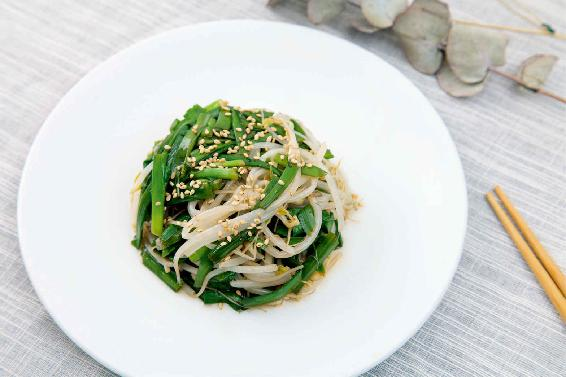
2.看韭菜叶子的末端是否往下耷拉
如果韭菜叶子耷拉，就不是新鲜的韭菜。
3.挑品种
如果韭菜叶子很细很长，而且叶子细细的、尖尖的，这种韭菜的品种比较好。如果叶子很宽、很平，还厚厚的，那这种韭菜的品种就不够好。
杜甫有一首名诗《赠卫八处士》，讲的是多年不见的老友在战乱中相见。其中有两句最为动人：“夜雨剪春韭，新炊间（jiàn）黄粱。”
这两句听起来是讲食物，其实大有深意。古人认为“春韭”是早春最好吃的蔬菜，为了招待老友，冒着夜雨出门，剪下园里刚长出的头茬鲜嫩韭菜，显示出主人最高的诚意。
“春韭”是一个很著名的典故，说在蔬菜中什么菜味道最好——“春初早韭，秋末晚菘”，也就是早春出的头茬韭菜和晚秋收获的最后一批白菜，都是最好吃的蔬菜。
这两种菜在它们各自的时令也是最补益我们身体的菜，所以美食和养生从来都不是矛盾的，它们是完全融为一体的，这就是中国传统的饮食智慧。